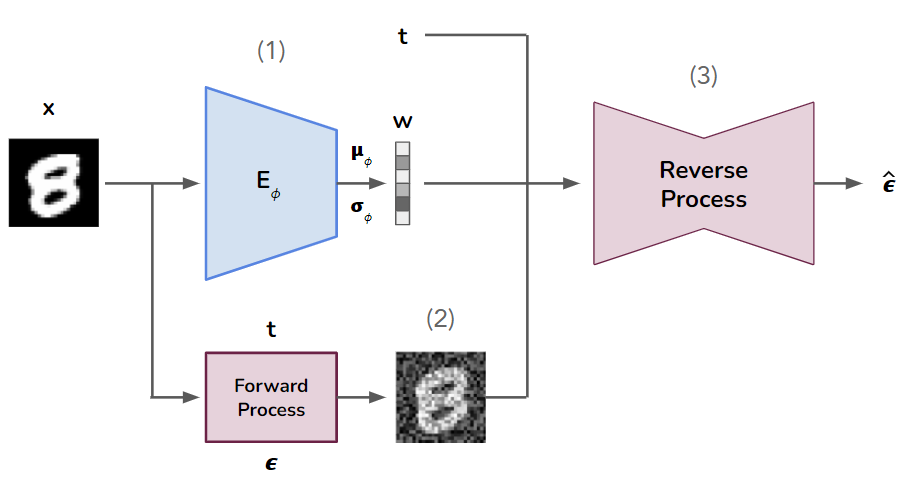

Egoitz Gonzalez
About me
Hi there, I'm Egoitz. I am currently pursuing my Master's degree in Artificial Intelligence at the University of Amsterdam. Prior to this, I obtained a double Bachelor's degree in Physics and Electronic Engineering, which equipped me with a solid foundation in math and programming. During my undergraduate studies, I developed a growing interest in AI and DL and decided to pursue a career in this field.
My main areas of interest are Deep Learning, Computer Vision and Reinforcement Learning, and I like to explore new ways to enhance my skills and knowledge in these fields. I have hands-on experience in Python and frameworks such as torch and keras, and I enjoy coding and experimenting with different AI models. Overall, I am motivated to contribute to the development of innovative AI solutions, while continuing to learn.
Education
-
MSc AI @ UvA, Amsterdam, NL 2022-2024

-
BSc Physics + Electronic Engineering @ EHU, Bilbao, ES 2016-2021

Experience
- Teaching Assistant @ UvA, Amsterdam, NL 2023
- Python Developer @ sherpa.ai, Bilbao, ES 2021-2022
- Student Intern @ Cambrian Intelligence, ES 2021
Projects
All public projects are available on GitHub
-
Uncracking the Bagel repo report poster
Anomaly detection on 3D point cloud data using point-voxel diffusion. We use denoising diffusion models to learn the distribution of healthy data, i.e. learning to generate samples without anomalies. Then, given an anomalous sample, we apply some steps of noise to the point cloud data and reconstruct its healthy version using the diffusion model. Taking the difference between the original anomalous sample and the reconstructed healthy sample we can detect the anomalies. This project is part of my master's degree in AI.
-
 VAE-VDM repo blogpost supplement poster
We explore representation learning using probabilistic diffusion models. We use an architecture for variational autoencoders that uses a variational diffusion model (VDM) as the decoder and a custom CNN as the encoder. We train the VDM conditioned on a latent representation learned by the encoder and analyze to what extent the encoder is able to learn meaningful representations in the latent space. This project is part of my master's degree in AI.
-
DeeLeMMa repo
Simple toolkit to build modular deep learning models. It was built from scratch based on pytorch or keras interfaces. Through this project, I was able to gain practical knowledge and experience in implementing the fundamentals of DL models, as well as resolving unexpected issues that can arise during the coding and model training. It was developed as part of my final bachelor's degree project.
-
Cardumen page repo
Simple environment to simulate fish behaviour. It functions as a testing playground for a diverse range of experiments, including utilizing projective geometry for object detection, as well as training and evaluating reinforcement learning agents with inputs from multiple sources.